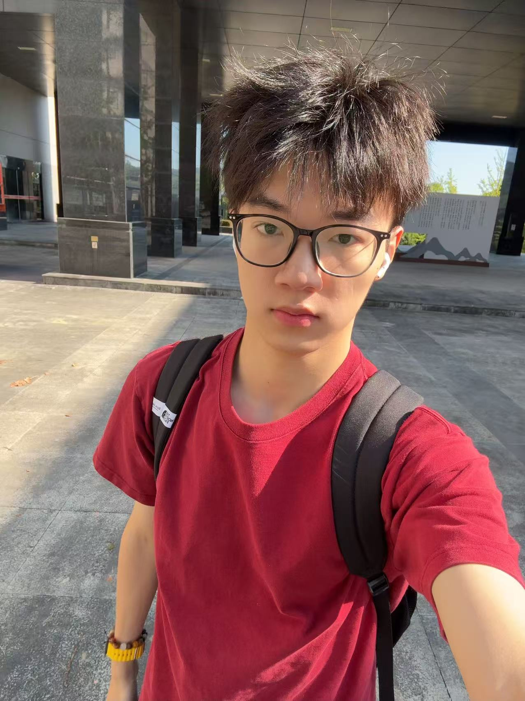

健康睡眠理论研究
研究健康睡眠的机制与影响因素，探索改善睡眠质量的有效方法.

董宇坤，男，2003年生，现任通讯录天菜、博士生导师、硕士生导师。乘风2026(Potent季)冠军。 主要从事情感交流、恋爱心理、性生活理论与实践等方面的研究。近年来在国内外学术期刊上阅读多篇高水平论文，并未参加多项科研项目。
恋爱，主要从事上海轨道通勤、健康睡眠理论研究、天体物理，共同攻克三维藤原猜想.
门面担当，破圈曲目《纤维》、《阳宝》、《处处吻》、《寻人启事》、《只爱陌生人》，最终乘风之夜C位出道.
恋爱，研究方向为农学技术实践与应用、羽毛球实战、S.
不愿承认恋爱过，攻克异地量子交流难题，陪伴备战考公，数量关系之神（全部下岸）.
通讯录初舞台，青涩的悸动，摸了一下几把一晚上没说话.
研究健康睡眠的机制与影响因素，探索改善睡眠质量的有效方法.
研究农学技术的实践与应用，推动农业现代化发展.
2025.12.
通讯录年鉴，2026年第1卷，35-44.
2026.05.
中国高等恋爱心理学，2026年第2卷，118-129.
2026.07.
烂屌必干100件事，2026年第7卷，1-14.
2026.07.
冻肉坐骑故事会，2026年第7卷，1-14.
* 为第一作者，一篇文章中出现多个则为共同一作.
华东师范大学，wanna.
上海交通大学，卢达鑫.
同济大学，邹承霖.
浙江宁波，顺直福子.
* 为与叶祥涛联培的学生
办公室： 思源北苑5号楼1218
电话： +86-199-7171-5361